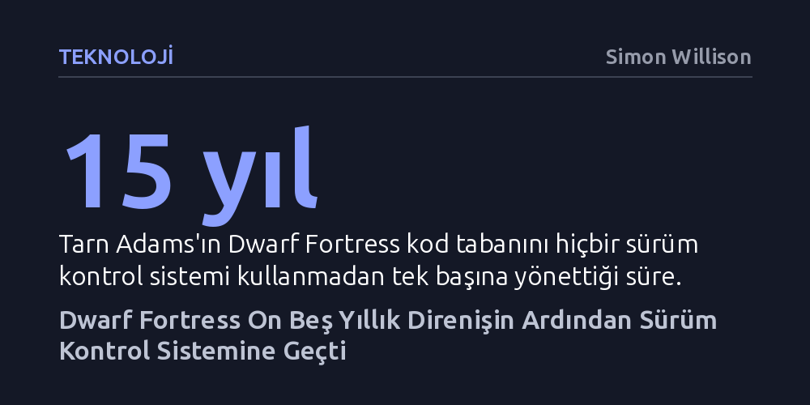

TEKNOLOJI · Simon Willison · 2026-10-11
Oyun tarihinin en karmaşık simülasyonlarından Dwarf Fortress, on beş yıl boyunca hiçbir sürüm kontrol sistemi kullanılmadan geliştirildikten sonra Steam sürümüyle modern kaynak yönetimine geçti. Bu adım, yazılım dünyasının en sıra dışı bireysel zanaatkârlık efsanelerinden birinin standart endüstri pratiklerine teslim oluşunu belgeliyor.
Yazılım mühendisliğinin 'olmazsa olmaz' kurallarının bile bireysel vizyonla yıllarca aşılabileceğini, fakat ticarileşme ve ölçeklenmeyle birlikte standart araçların kaçınılmaz hale geldiğini gösterir.

Herhangi bir yazılımcıya devasa ve son derece karmaşık bir projeyi tek bir satır sürüm kontrolü kullanmadan yönetmeyi teklif ederseniz, alacağınız tepki dehşet dolu bir şaşkınlık olur. Git veya türevi kaynak kontrol sistemleri, modern yazılım geliştirmenin tartışılamaz temel direğidir; yapılan değişiklikleri kaydeder, hatalı adımları geri almayı sağlar ve kodun güvenliğini garanti eder. Kod tabanı büyüdükçe bu araçlara duyulan ihtiyaç bir lüks olmaktan çıkıp hayatta kalma meselesine dönüşür.
Oysa simülasyon derinliğiyle efsaneleşen Dwarf Fortress, tam on beş yıl boyunca bu kuralı açıkça çiğnedi. Gezegen jeolojisinden canlıların organ hasarına, bireysel psikolojilerden uygarlık tarihlerine kadar akılalmaz ayrıntıları eşzamanlı simüle eden bu devasa kod yığını, yaratıcısı Tarn Adams tarafından tek bir sürüm kontrol aracı dahi açılmadan yazıldı. Yazılım geliştiricisi Simon Willison’ın da hayranlıkla vurguladığı gibi, bu büyüklükte ve karmaşıklıkta bir projenin hiçbir güvenlik ağı olmadan ilerletilmesi mühendislikten ziyade çılgınca bir sanat eylemiydi.
Tarn Adams’ın bu sıra dışı çalışma biçimi bir ihmalden değil, bilinçli ve şahsına münhasır bir tercihten kaynaklanıyordu. Adams, bu tercihi sorulduğunda "Ben sürüm kontrolü bile kullanmıyorum," diyerek yazılımcıların kendisine dehşetle baktığını ancak bu yöntemin kendi yapısına daha uygun olduğunu belirtmişti. Yıllar içinde nedenler değişse de temel yaklaşım aynı kaldı; Adams, standart araçların getirdiği kalıplara girmek istemiyordu.
Geleneksel yazılım süreçlerinde her değişiklik küçük parçalara bölünür, dallara ayrılır ve dikkatle belgelenir. Adams ise kod tabanını adeta bir ressamın tuvali gibi kullandı; eski sürümleri saklamak veya dallanmalar yaratmak yerine kendi zihinsel haritasına ve manuel dosya kopyalarına güvendi. Bu yaklaşım dışarıdan bakıldığında intihar gibi görünse de dış etkenlerden tamamen izole bir ortamda, tek bir zihnin yarattığı dünyanın saf vizyonunu korumasına olanak tanıdı.
Bu romantik ve münzevi zanaatkârlık dönemi, oyunun Mart 2023 civarında gerçekleşen resmi Steam çıkışıyla birlikte geri dönülmez biçimde değişti. Grafiksel arayüzün yenilenmesi, yeni ekip üyelerinin sürece katılması ve projenin ticari bir başarıya dönüşerek yaratıcılarını milyoner yapması, kurumsal gerçeklikleri de beraberinde getirdi. Adams, artık takip etmesi gereken Discord kanalları ve kullanması gereken sürüm kontrol araçları olduğunu belirterek geliştirme sürecinin ister istemez daha karmaşıklaştığını kabul etmek zorunda kaldı.
Simon Willison, Dwarf Fortress ekibinin bu tarihi başarı eşiğine ulaşmadan hemen önce modern yazılım araçlarına teslim olmasından tatlı bir hüzünle bahsetse de ortaya çıkan başarıyı muazzam buluyor. Yirmi yıla yakın bir süre boyunca endüstri standartlarını bütünüyle reddedip dünyanın en karmaşık simülasyonunu inşa edebilmek, yazılım ortodoksisinin sınırlarını zorlayan benzersiz bir vaka olarak tarihe geçti.
Dwarf Fortress'ın sürüm kontrolüne geçişi, yazılım dünyasında araçların amaca hizmet etmesi gerektiğine dair önemli bir ders barındırıyor. Endüstri, belirli kalıpları ve araçları mutlak doğrular olarak sunma eğilimindedir; oysa Tarn Adams, tek bir kişinin adanmışlığı ve vizyonunun en katı mühendislik kurallarını bile yıllarca alt edebileceğini kanıtladı.
Bununla birlikte hikâyenin sonu, projenin büyüklüğü ve paydaş sayısı arttığında sistemli araçların kaçınılmazlığını da gösteriyor. Bireysel deha bir noktaya kadar fırtınayı tek başına göğüsleyebilse de kalıcı, ticarileşen ve paylaşılan bir ürün yaratmak eninde sonunda modern mühendislik standartlarıyla el sıkışmayı zorunlu kılıyor.